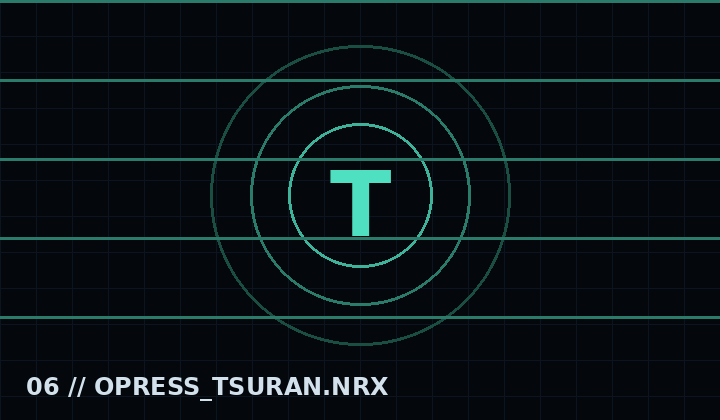

Elegante anfitriona de Opress: educada, orgullosa y amenazante, con motivos inspirados en el pavo real.

Señorita de Opress
Historia
La señorita Tutsuran recibe a BF y GF en Opress con una cortesía impecable que esconde soberbia y peligro. Ofrece respuestas ambiguas, protege los secretos del lugar y evita que los visitantes se acerquen a Madan.
“Sean bienvenidos. Procuren no confundir hospitalidad con permiso.”
Canciones
Rush Hour
Señal de sistema de muestra · Sustituye el archivo en assets/audio/ para añadir música oficial.
Mecánicas y presentación
Diálogo teatral
Eco ambiental
Presión elegante
Galería
Señal animada del expedienteEspacio para sprite oficialEspacio para arte conceptual